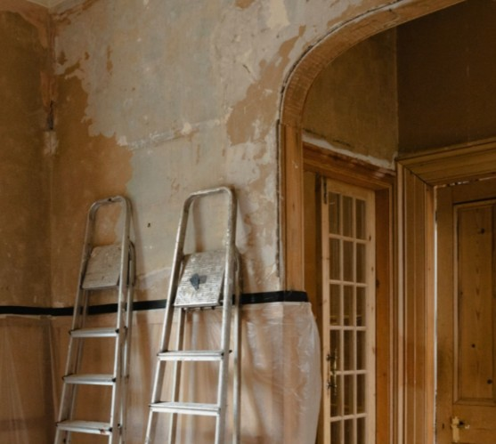

Breathable insulation matters in traditional buildings because the wall has to dry as well as keep heat. Pre-1919 stone and brick were built to absorb rain and indoor humidity, then release that moisture when the weather or the heating allows. Cover those walls with the wrong lining and you restrict that process. The aim of a BreatheTherm specification is simple: warmer walls without unnecessarily restricting moisture movement.
Why traditional stone and brick walls need to dry
A solid wall is not a sealed sandwich. Lime mortar, porous brick and stone take in moisture from driving rain, from the ground at the base, and from cooking, bathing and breathing inside the house. They also give that moisture back, through the face of the wall and through the plaster, as vapour and as liquid moving in the pores.
That is why so many pre-1919 houses have survived without a cavity, a membrane or a modern damp-proof course. The construction is hygroscopic. It buffers humidity. It dries. Historic England, SPAB and conservation officers describe this as breathability: the capacity of the fabric to pass vapour and to dry, not a marketing word for "natural".
When a lining stops drying, the masonry behind it stays colder and wetter for longer. Salts move. Timber at joist ends stays damp. Mould finds the first cold surface in the room. The failure is rarely dramatic on day one. It is a wall that can no longer do the job it was built to do.
What breathable insulation actually means
On a specification, breathable means vapour-open. The useful number is the Sd value: how thick a layer of still air would have to be to resist vapour as much as the material does. An Sd of about 0.5 m or less is generally treated as breathable. PerliTherm sits at 0.2 to 0.4 m.
It also means the material can hold and release small amounts of moisture without failing. Expanded perlite bound with hydraulic lime does that. Silica aerogel does that in a much thinner layer. Foil-faced PIR board does not. A polyethylene vapour control layer does not. Dense gypsum on a well-sealed board does not.
Breathable is not the same as draughty. You can still run a careful, fabric-first retrofit with junctions taped where they need to be, and with ventilation that actually extracts moisture at source. The wall itself should not be asked to act as a raincoat on the inside.
How vapour-closed insulation traps damp on solid walls
Internal insulation makes the original masonry colder, because less heat reaches it from the room. That is true of every internal system. The risk appears when the lining is also vapour-closed.
Moisture that was able to dry to the inside now meets a foil face or a sealed plasterboard. Residual construction moisture, rain that has soaked the outer face, and indoor humidity that still reaches the interface all spend longer in the cold zone. That is interstitial condensation, and it is the main reason vapour-closed internal wall insulation has a poor record on traditional buildings.
Cement render on the outside compounds the same problem. A hard, dense coat reduces drying to the weather, so any moisture that does get in has fewer ways out. We cover that failure properly in later journal notes. For now, treat the wall as a whole: inner lining, masonry, pointing and outer face.
The BreatheTherm build-up that stays vapour-open
BreatheTherm combines vapour-open lime and perlite-based renders with optional aerogel insulation. The wall system, from masonry to room, is:
- PerliScratch, a keyed lime-perlite coat so the insulation grips the masonry.
- PerliTherm, the insulating body: expanded perlite bound with hydraulic lime, typically 50 mm, lambda 0.064 W/m·K.
- AeroBond and AeroGel where reveals, panelling or room proportions will not take a thicker lining.
- PerliFinish, a breathable lime finish ready for vapour-open decoration.
- PerliMesh within the coat where the wall needs crack resistance.
You can walk that stack in the internal wall layer guide. Thickness is not a catalogue default. It follows the masonry, the exposure and the junctions, which is the subject of reading a wall before specifying thickness.
When a wall cannot dry, what fails first
The first signs are usually in the room: cold corners, musty smell, mould on the new lining, peeling paint. Behind that, the masonry is holding more moisture than it used to, at a lower temperature.
Joist ends, bonding timbers and lintels are the fabric you cannot see and cannot afford to keep wet. External faces that were already marginal, especially on the weather side, start to show salts and spalling once drying to the inside has been cut off.
None of this means "do not insulate". It means do not insulate with a closed board and hope the U-value on the drawing is the whole story. U-values without trapping moisture is the companion piece: how thick a lining can be before the wall stops drying, and when hygrothermal modelling is the right next step.
How to specify breathable insulation for a solid wall
Start with the building, not the product. Confirm it is solid masonry, what the plaster and pointing are, how the wall is exposed, and what the client actually needs from the room. Will it work? is the short filter. A survey is the real one.
Then specify a vapour-open build-up that can be tailored. PerliTherm does the thermal work in most of the wall plane. AeroGel does it in the tight geometry. PerliScratch and PerliFinish keep the coats compatible with lime. If the building is listed, internal insulation and listed building consent is the process note, because consent is almost always required.
If you are specifying rather than occupying, the architect pack includes WTA data and hygrothermal notes. If you live in the house, book a free assessment and we will read the wall before anyone talks about millimetres.